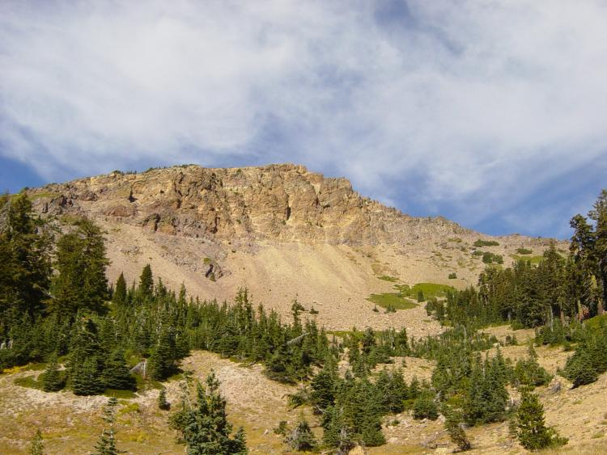

Pacific Crest Trail
In 2008, an agreement for realignment through Tejon Ranch in Southern California was reached.This realignment would relocate 37 miles of the PCT from the Mojave Desert floor to the more scenic Tehachapi Mountains. While an agreement was reached, the realignment is a long-term project; many details remain to be determined, as well as an Optimal Location Review—a lengthy process through which the ideal path for the new section of trail is specified. Actual relocation of the trail is unlikely to happen before 2021.
Portland, Oregon’s 40-Mile Loop proposes to extend the Springwater Corridor hiking and bicycling spur trail to connect the Pacific Crest Trail[58] with the proposed Cazadero Trail.[59]
Plans are currently in progress to add a dedicated pedestrian/equestrian lane to the Bridge of the Gods (modern structure) across the Columbia River. Currently, PCT hikers and equestrians must cross the bridge walking in vehicle traffic lanes—a potential danger which the new lane will eliminate. A completion date for this project is unknown.
